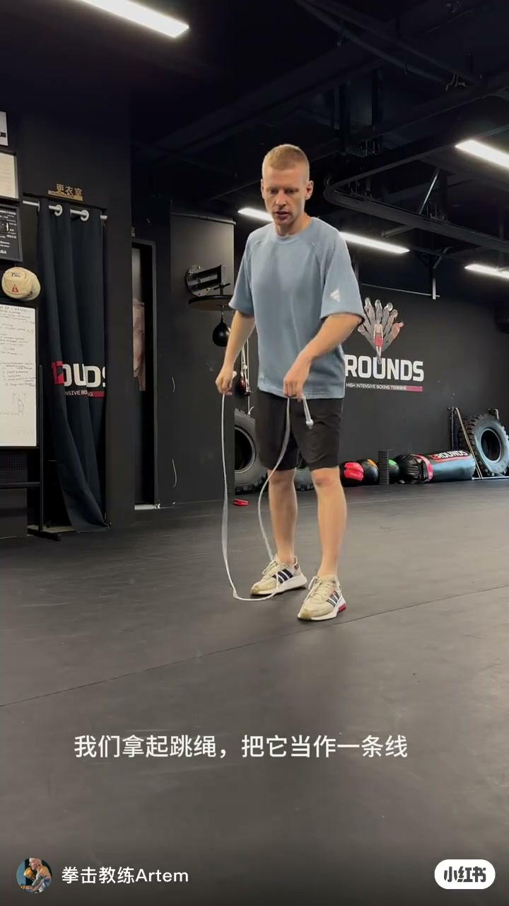
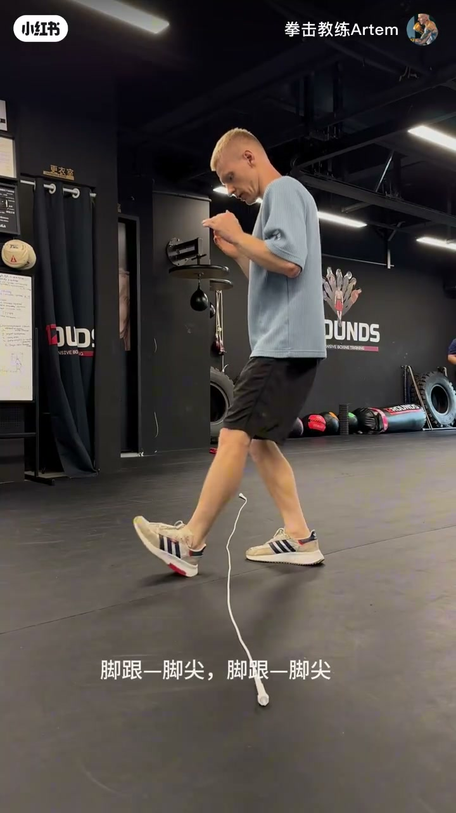
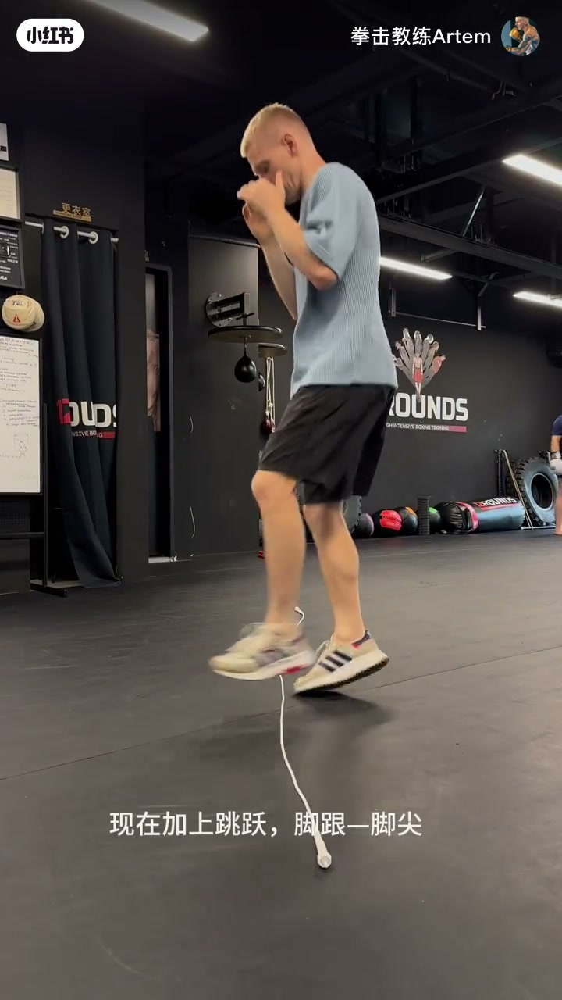
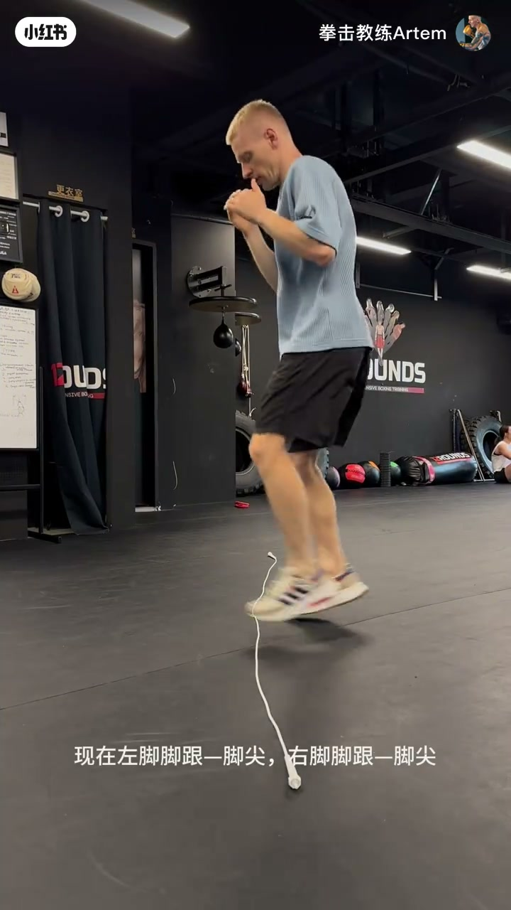
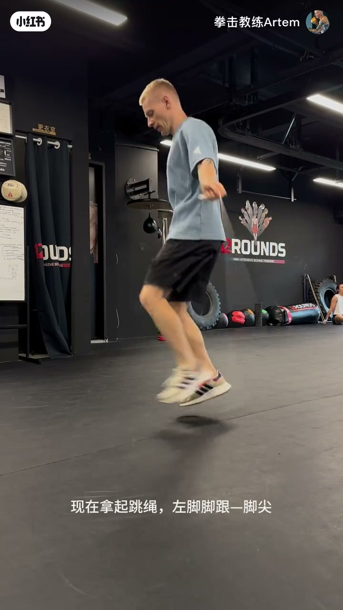
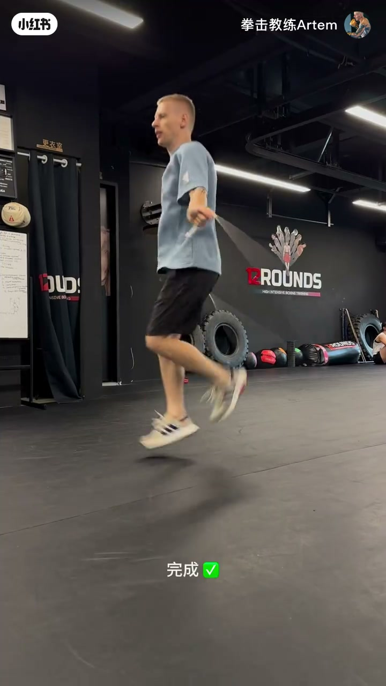

内容要点
这是一条面向初学者的拳击式跳绳入门演示：节奏口令始终是「脚跟—脚尖」，难度按「线 → 跳 → 换脚 → 真绳」递进。
[00:00→00:10]
铺线定空间
拿起跳绳铺在地上「当作一条线」，先站着做脚跟—脚尖，建立脚掌节奏与落点意识。
[00:10→00:27]
加跳再换脚
同一口令加上轻跳；随后左右脚交替：左脚跟—脚尖、右脚跟—脚尖，贴近拳击跳绳的换脚感。
[00:27→00:39]
真绳收束
拿起跳绳真正摇绳，仍按左右脚跟—脚尖完成；画面以「完成」收尾。
总结
别一上来就猛摇绳——先用地面绳线把脚跟—脚尖节奏跳稳，再接到真绳，才更像拳击手的跳绳。
把跳绳当作一条线 00:00–00:10
00:00教练 Artem 站在拳馆黑胶垫上，先拿起跳绳，明确指令：「把它当作一条线」——不是立刻抡圆，而是把绳铺在脚下当空间参照。

[00:02] 教练拿起跳绳铺在脚下，把它当作一条参照线
The coach lays the jump rope on the floor and treats it as a reference line
00:06双手大致保持护下巴的拳击站姿，开始重复口令脚跟—脚尖：前脚脚跟触地、脚尖抬起，再回落，让脚掌节奏先立住。

[00:08] 双手护下巴，前脚脚跟触地脚尖抬起，口令：脚跟—脚尖
Hands in guard, front heel down and toes up — cue: heel–toe
我们拿起跳绳，把它当作一条线。脚跟，脚尖，脚跟，脚尖。
加上跳跃与换脚 00:10–00:27
00:10节奏稳住后，教练说「现在加上跳跃」：仍对着地面绳线，脚掌继续脚跟—脚尖，但身体开始轻跳离地，把踏步感转成跳绳感。

[00:13] 在绳线上方加入轻跳，仍保持脚跟—脚尖节奏
Add a light bounce over the line while keeping the heel–toe rhythm
00:15下一步是换脚：不再单侧重复，而是左脚脚跟—脚尖、右脚脚跟—脚尖交替。画面里他腾空换脚，双手仍在护卫位，绳线仍在地面作参照。

[00:22] 换脚跳跃：左脚脚跟—脚尖，右脚脚跟—脚尖交替
Switch feet: left heel–toe, then right heel–toe in alternation
现在加上跳跃，脚跟，脚尖。换脚……现在左脚脚跟，脚尖，右脚脚跟，脚尖。
拿起跳绳完成 00:27–00:39
00:27无绳与假绳阶段结束后，教练真正拿起跳绳摇动，把刚才练熟的左右脚跟—脚尖接到真绳里：先左脚节奏，再右脚节奏。

[00:30] 拿起跳绳真正摇绳，左脚脚跟—脚尖接入
Pick up the rope and swing it for real, starting with left heel–toe
00:37连贯摇绳跳跃后，画面叠出「完成」——整条短片走完「线 → 跳 → 换脚 → 真绳」四步。标题里的「5分钟」更像练习时长承诺；本片演示本身约45秒。

[00:37] 完整摇绳跳跃收尾，画面叠字「完成」
Finish with full rope swings; on-screen text says Done
现在拿起跳绳，左脚脚跟，脚尖；右脚脚跟，脚尖。完成。